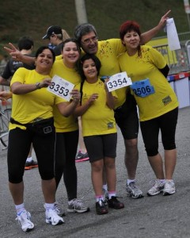
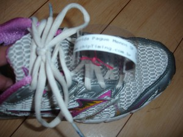
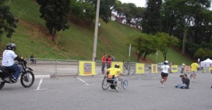
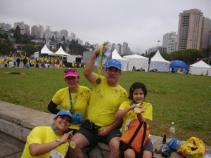
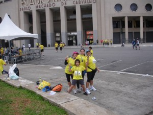
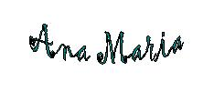

vamo, vamo, vamo…
1º. Circuito de Corridas Farmácias Pague Menos – São Paulo

Para fazer as inscrições nessa corrida, evento que reúne toda a família e promove a saúde e o bem-estar em todos os sentidos, precisei pensar quem poderia correr com a Syssi o percurso de 1k já que o maridão seria compelido por livre, espontânea e forçada vontade correr 4k, percurso que eu e Melinha tínhamos escolhido.
Depois de muito pensar….. eu, meio que faceira convidei Valéria para acompanhar a Syssi num percurso super agradável. Se pensarmos 1k não assusta quem nunca praticou esporte e, depois o kit é super recheado. Valéria titubeou um pouco, mas não resistiu aos meus encantos e concordou (rs). Já tinha uma acompanhante para a Syssi, agora restava o maridão…… pois quando ele empaca, não há cristo que o remova.
O detalhe do maridão … aos poucos fui esculpindo seu psíquico e o tempo foi meu aliado…… primeiro fizemos um teste de pisada e aproveitamos para adquirir o tênis para corrida (ele detesta tênis, porque acha que esquenta o pé, então esta foi a oportunidade perfeita!); ele tem me levado nos locais das corridas que já participei; fomos ao Parque Vila Lobos comemorar o niver do Claudião onde conversamos bastante com o Enio dos Baleias que contou o quanto pesava, como emagreceu e o gosto que adquiriu pelas corridas. O maridão também participou da prova do Combate contra o Câncer no Center Norte fazendo caminhada por livre pressão minha para acompanhar Syssi num percurso de 3k (pelas fotos acho que ele curtiu bastante). Na corrida de revezamento conhecemos e conversamos um cadinho com Paulo Mota e Thiago antes da corrida e depois ele e Syssi ficaram no ponto de encontro onde também pudemos conversar com os colegas integrantes da equipe (Fabio, Samuca, Luciano, Sr. Pedro), tudo isso acho que aquilatou sua vontade de participar de uma prova, embora ele desse sempre uma desculpa de que seu joelho pinçava, pois várias foram as minhas provocações para correr.
No sábado durante o almoço eu e Melinha comentamos sobre a corrida e ele de pronto disse que não iria participar, até tentei seduzi-lo com uma bermuda dry fit que comprei para esta corrida. Sei que ele gosta de fazer charminho, então apostamos que o maridão não faria o percurso em 30 min. Eu, Melinha, Syssi e Ygor fomos buscar os kits, tal como em Salvador recheados de brindes dos patrocinadores, tendo como diferencial a entrega do chip descartável.
Enfim domingo chegou, meu rádio despertou as 5hs15min o maridão rapidamente levantou-se da cama. Eu fui para a cozinha preparar o café da manhã e acordar as meninas. Quando voltei ao quarto ele estava fazendo alongamento. Nosso café da manhã foi por revezamento, embora eu tivesse deixado as roupas ajeitadas, os documentos, a máquina fotográfica no dia ainda fiquei perdida. Logo a Valéria estaria me ligando para dizer que estava chegando a nossa morada.
Partimos então rumo ao Estádio do Pacaembu, pertinho de casa. O tempo estava nublado e sem sinal de chuva, o clima estava agradável.
Já no local do evento, enquanto eu e Melinha colocávamos o chip descartável nos tênis de Valéria, Syssi e maridão um fotógrafo de um site de corrida quase caiu por cima de nós, minutos depois suas lentes nos flagaram naquele clima de festa.
 
Aproxima-se o horário da largada, dei as recomendações a Valéria e Syssi para prestarem atenção na chamada da largada delas que deveria ser 10 minutos após a nossa, depois de concluída a prova nos aguardar. É a primeira prova delas, e em especial da Syssi que correria com adultos também, diferente das provas kids que são por baterias, não pude acompanhar esse momento dela, mas estava em boa companhia pois sempre existiu um bom entrosamento entre Val e Syssi.
Eu, maridão e Melinha posicionamos para a largada e ficou acertado de que cada um faria sua prova. Dada a largada o maridão foi embora, Melinha ficou um pouco ao meu lado e também foi, fiz minha corrida tentando correr mais do que caminhar, de cara tem uma boa descida e puxei o freio para não desembestar, no plano corria um pouco mais forte e as vezes mais fraco. Perto do viaduto da r. Gal. Olimpio da Silveira dava para ver os corredores retornando, procurei pelo maridão e não o vi, igualmente a Melinha, um pouco depois do retorno encontrei o posto de hidratação, tomei uns goles e lá fui eu pela Av. Pacaembu em direção ao estádio, olhei no relógio e percebi que poderia fazer um tempo abaixo do realizado em Salvador, e assim foram os minutos seguintes entre passadas e olho no relógio. No final da avenida tem uma curva que dá acesso a Praça Charles Miller, no meio da subidinha meu gás deu sinal de estar no fim e como tem sido nos dias de corrida ouço aquele “Mããããe” olho para meu lado direito e vejo Syssi (no meio da muvuca consigo vê-la tal qual um olhar de falcão……rs) faltam apenas poucos metros, respiro fundo e piso no tapete vermelho! O Portal acusava 31 min… !!!!!!!!!! UHUUUUUUUUUUUUUUUU……… consegui fechar esse circuito num tempo menor que o de Salvador!!!!!!!!!!
Logo depois da linha de chegada à direita pego minha medalha, recebo uma bebida isotônica, o kit de frutas e vou ao encontro de Syssi e Valeria. Chego e pergunto a elas sobre a prova, Valeria simplesmente me diz que adorou, sento-me na calçada e logo Melinha se aproxima dizendo ter visto minha chegada. Ficamos procurando o maridão, Valeria e Syssi dizem não tê-lo visto passar, temos a oportunidade de ver um cadeirante cruzar a linha de chegada – é muita emoção e, todos que por ali estavam bradaram em homenagem àquele herói.

Passavam alguns minutos cheguei a pensar que ele tinha errado o percurso e estaria fazendo talvez 8k. Não demora para o celular da Syssi tocar, era ele querendo saber de sua localização, acho que ele não ligou no meu celular imaginando que eu ainda estivesse na prova, pegamos nossas coisas e fomos ao encontro dele que estava em frente ao Estádio.
Apesar do tempo nublado os termômetros acusavam 22°C, ele com o rosto corado disse que seu tempo foi 28 min., duvidamos bastante. Melinha chegou 29 min. Valeria e Syssi disseram que fizeram em 10 min., todos estávamos felizes com a prova, o percurso e o tempo.
 
Diferente do que aconteceu na etapa de Salvador em que o resultado foi divulgado 3 dias após a prova e as fotos do evento não achei em site nenhum, o resultado aqui veio a galope, no cair da noite já estava no site, o tempo liquido: maridão com 00:27:35, Melinha 00:28:35, Eu 00:30:56, Syssi e Valéria 00:07:38.
Saímos dali e fomos até a cidade universitária para ver e prestigiar o noro Ygor que estaria participando da ECORUN de revezamento com seus colegas de facul em mais um domingo cheio de provas na cidade.
No final o maridão nos supreendeu, Melinha fez uma ótima prova, eu consegui baixar meu tempo, Valéria e Syssi também marcaram sua participação no Dia de Domingo!
Espero repetir o mesmo ritmo nas próximas provas.

“Esteja atento em melhora contínua: hoje melhor do que ontem, pior do que amanhã.”
link para o album de fotos:
.jpg "DSC01818 (1024x225)")
.jpg "DSC01822 (1024x576)")
.jpg "DSC01856 (1024x576)")
.jpg "DSC01933 (1024x576)")

{kind=link}
{kind=link}
{kind=link}
{kind=link}
{kind=link}
Bem….minha 1ª prova…..gostei!!!!!
Gostei pra caramba, na verdade eu e a Syssi mais nos divertimos do que tudo. A única coisa que me atrapalhou e eu não consegui chegar em 1º, foi aquele monte de gente correndo exatamente na minha frente…..pô caramba!!!!!rsrsrs, nem para quebrarem o galho, afinal era a minha primeira vez………
Eu e a Syssi ficamos esperando o Silvio passar, preparadas para tirar fotos….e kd????? ele não passou, eu tenho a impressão que ele furou fila, mas ele nega de pé junto!!!!!!!
Enfim, a verdade é que eu gostei bastante, tanto que hoje vou começar a fazer caminhadas com uma amiga no Estadio da Ponte Grande, prox. a minha casa.
É como dizem: a 1ª vez a gente nunca esqueçe.
bjsssssssssss
Que legal, Ana! Família que corre unida, permanece unida. Parabéns a todos. Que venham muitas outras verdadeiras celebrações como essa.
Estou na torcida para que esse circuito ganhe força e novas etapas, quem sabe passando por aqui também.
Abraço e boas corridas!
Fábio
Grande evento em familia. A fotografia não deixa dúvidas. Deixa apenas uma invejinha branca, como diz o Namiuti. Isto que é um domingo em família perfeito.
Parabéns especiais ao Sílvio que mostrou para todas as mulheres deles, que não esta aí para brincadeiras, apenas. Parabéns Silvio. Quero vê-lo também nas próximas.
Parabéns Valéria. Pela disposição de ir conhecer e se encantar. É isto mesmo. Eu me orgulho muito de tudo isto. Estão melhores do que eu, em corridas curtas.
E Ana Amélia segue firme, assim como o sumido Alecão, para a nossa São Silvestre.
Adorei o evento em família… Ainda vou fazer um desses.
Valéria, bem vindo ao time.
Syssi, ninguém segura essa menina!
E vamo, vamo, vamo tudo junto!
Valéria
eu disse que a corrida ia ser legal …… eu bem vi vc e Sy no entusiasmo!
ahhhhhhh, plagiando o Silvio né?!…rs, bom, ele provou que foi rápido como estreiante tb, nao posso duvidar que tenha cortado caminho.
foi só dar um empurraozinho para vc começar a caminhar, isso é muito bom, traz vários benefícios para a saúde (principalmente da mulher)
realmente, a 1a corrida sempre ficará marcada
Parabéns pela prova e que vc participe de outras tantas,
jks
Fábio,
obrigada pelo seu comentário.
Não existem tantas provas que possamos reunir a família, mas sempre que puder tentarei fazê-lo, só assim a celebraçao é completa.
Também espero que eles estendam para mais cidades
Abs e boas provas
Ana
Claudiao
Inveja branca é bastante salutar……..rs,
Eu nao tinha dúvidas que o Silvio iria correr com todo o gás, aliás ele é disciplinado em matéria de exercícios físicos, faltava um empurraozinho, agora vamos ver se ele continua, esperamos que sim.
O tempo é questão de tempo………rs
Quero ver vcs da SS agitando a festa do ex-sedentários!
abs
Ana
Alecão
Correr em família é muita curtição …….. madrugamos com muita alegria no domingo só para participar das provas, as fotos não deixam dúvida,
Vambora!!!
É isso aí!
Fiquei muito feliz por ter corrido em menos de 30minutos…segui algumas dicas do livro + corrida que o Cláudio emprestou, aliás, obrigada Cláudio o livro é muito bom ainda estou lendo!
Mas é isso, o domingo foi de muita diversão…e novembro promete!!!
Estou anciosa para a primeira corrida do mês..e para a SS tbm!!!
Obrigda!!!!!!
Me aguardem…………. agora só falta o Dr Gontran.
rsrsrsrsrsrs
Beijos a todos
Melinha,
seu tempo foi ótimo!!! a leitura a contento, vamos ver as proximas corridas…….
bjks